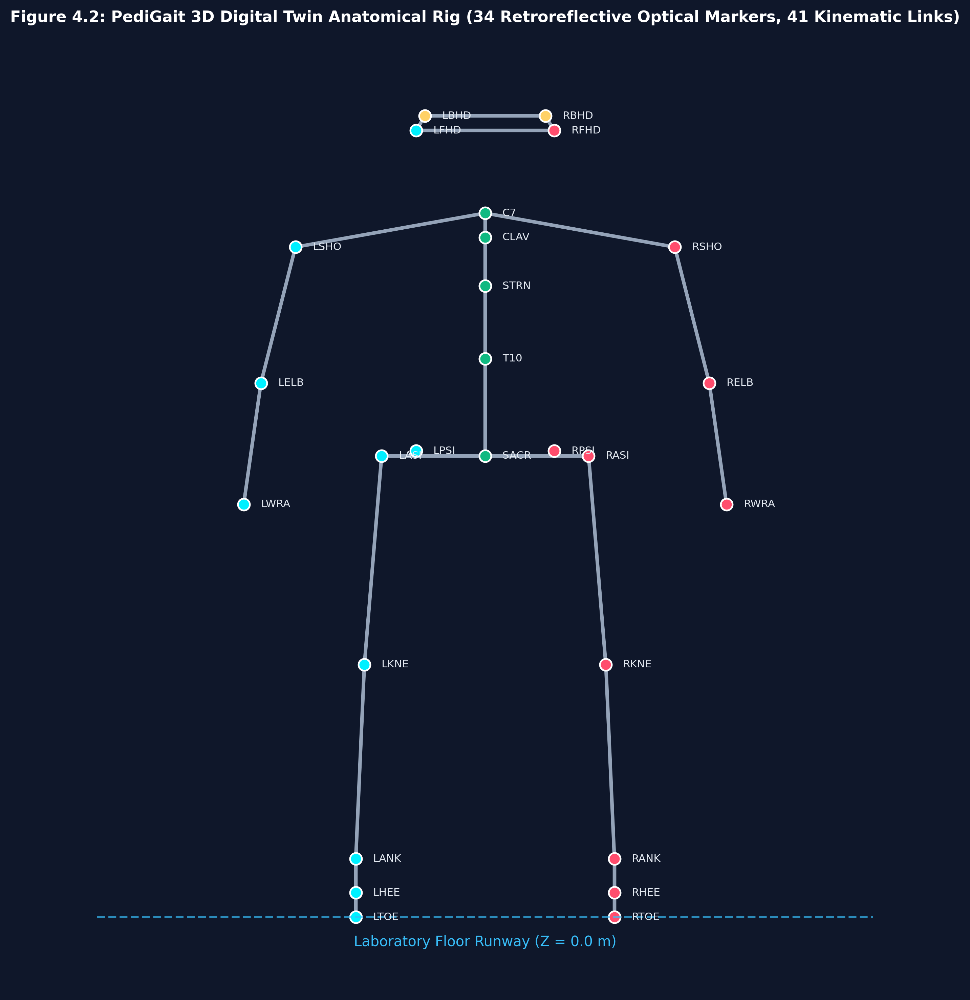

01 / 06 // BIOMECHANICS · DIGITAL TWIN
PEDIGAIT
C3D MOCAP · KSwS SYMMETRY · CNN-BiLSTM · RegularizedPINN(18→9)
End-to-end pediatric gait framework transforming optical C3D motion-capture trials into 3D skeletal digital twins, Knee Swing Symmetry/Severity scoring, 10-fold patient-separated classification (356 patients, 1,719 cycles), and physics-informed joint-torque prediction.
